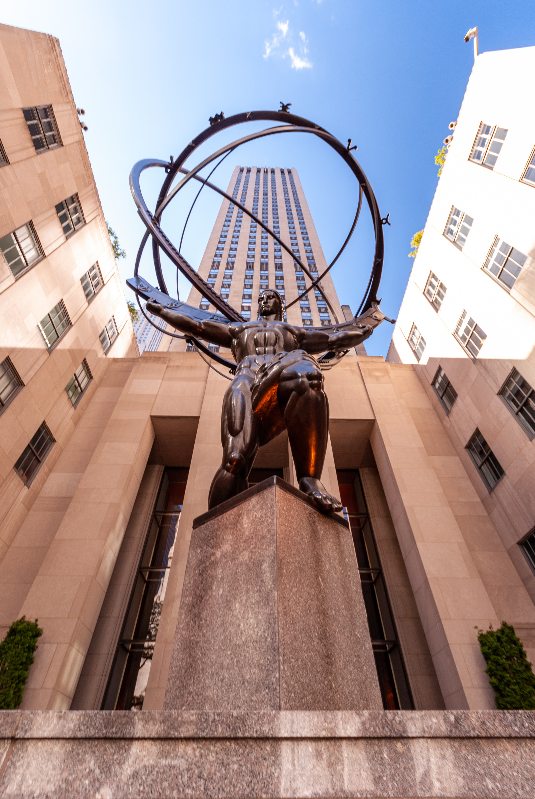
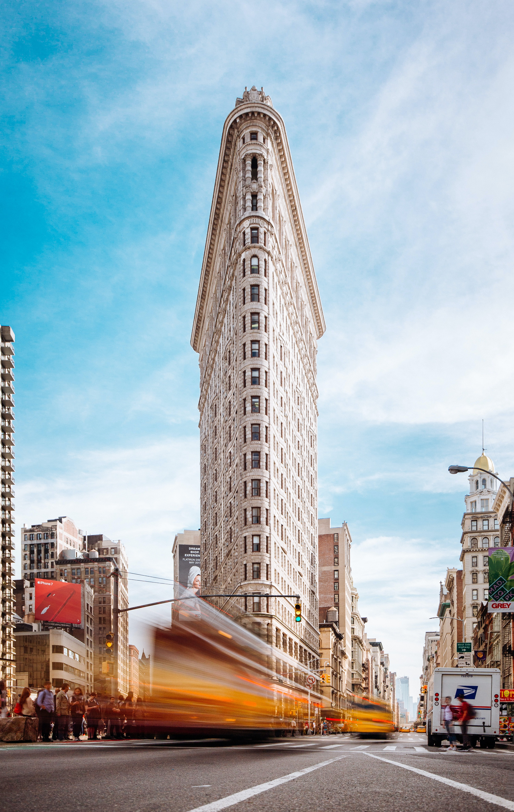
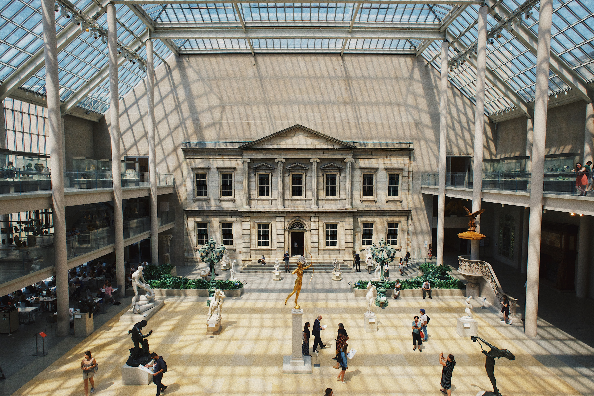
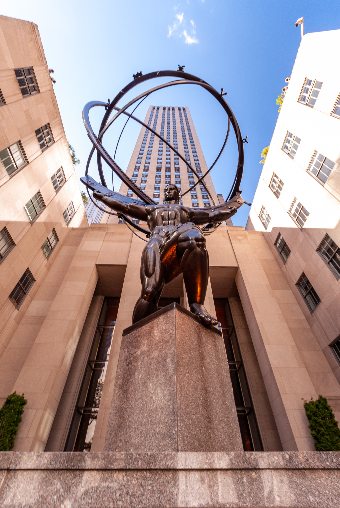
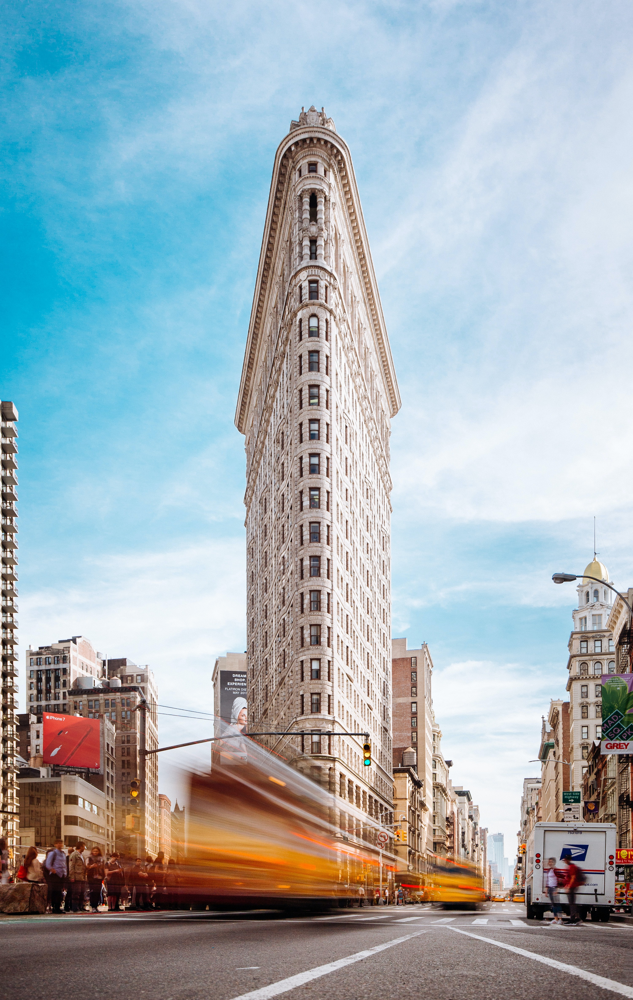
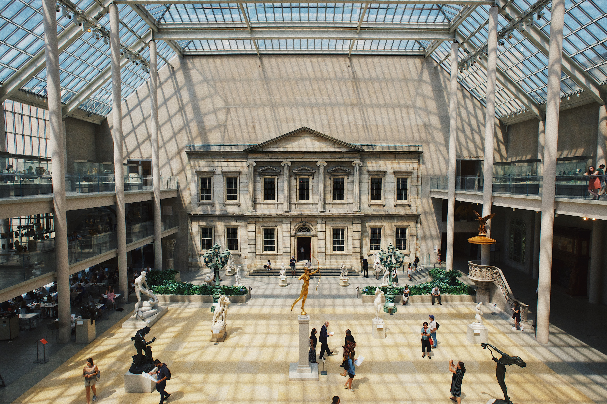

The architectural landscape of New York City is the culmination of the new and the old and how the two so beautifully exist together. The buildings are a significant part of what holds the city together. This collection is a glimpse of a few landmarks that have formed the way I think about New York City.
See Original Channel ☞
 




